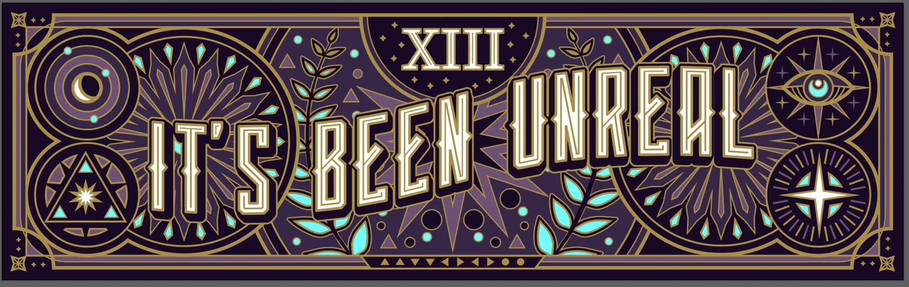
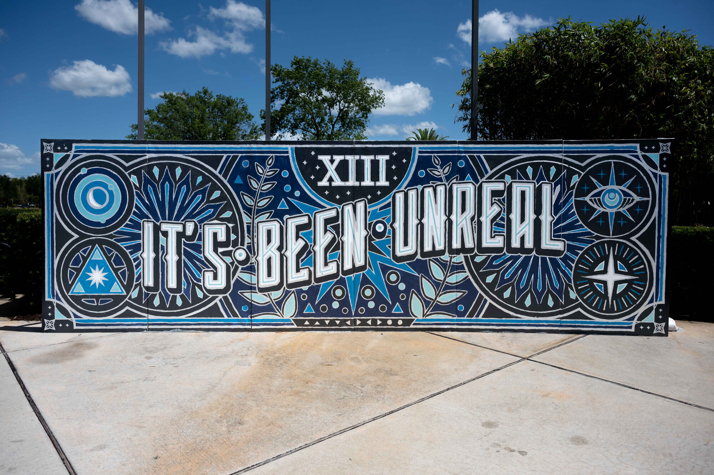
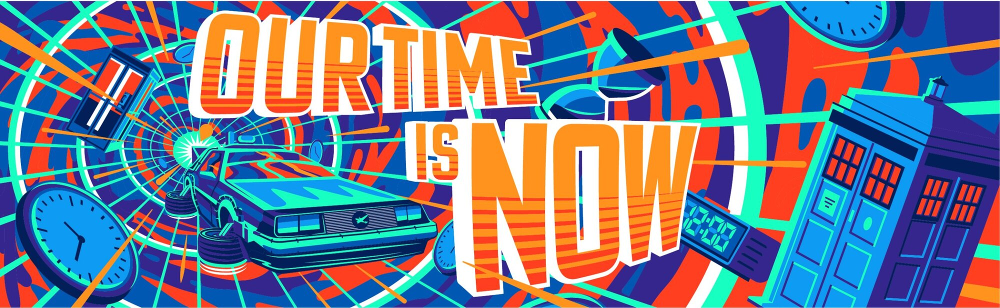
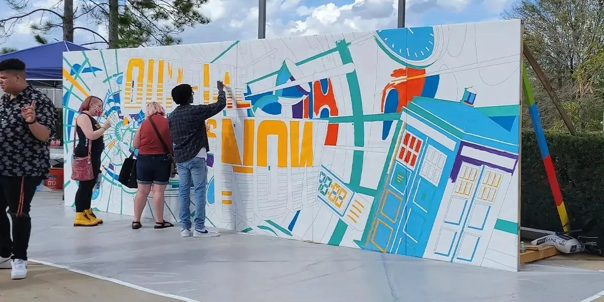
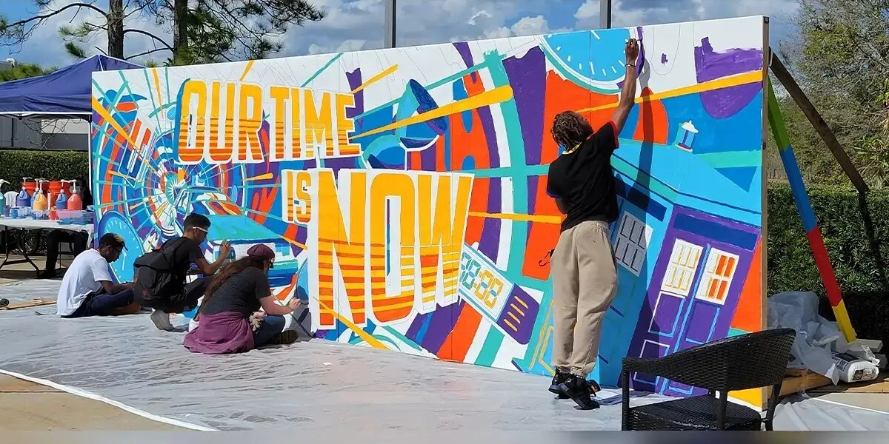
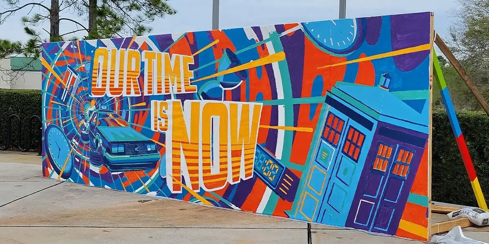
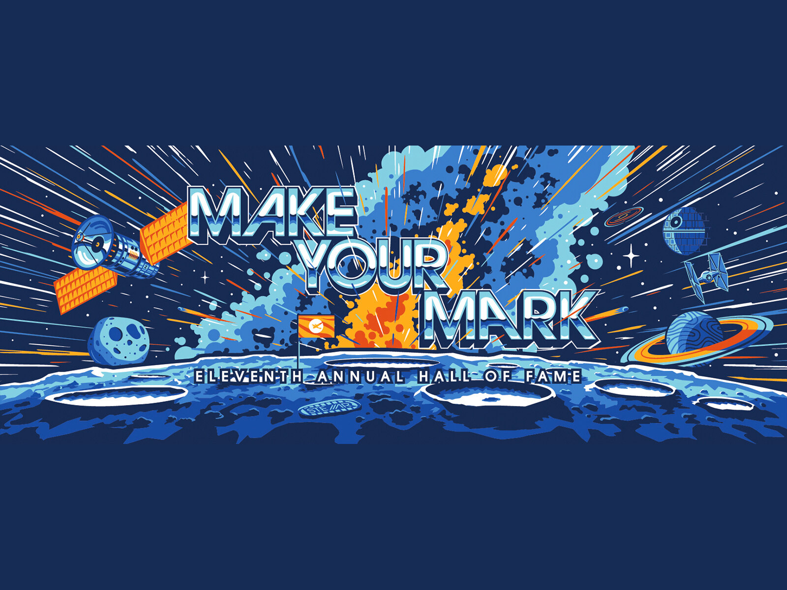
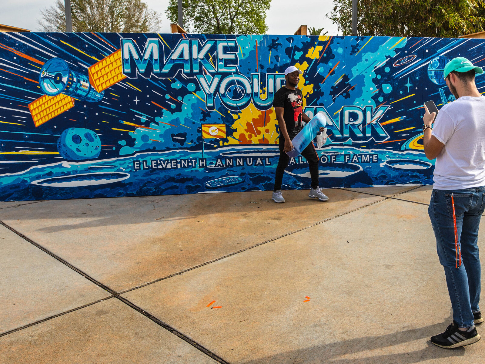

Full Sail UniversityHall of Fame Week
Murals
Three paint-by-number murals for Hall of Fame Week. I drew the artwork, and students and guests painted it in over the course of the week.
- My role
- Illustrator and art director
- Format
- Paint-by-number murals, painted by the community
- Year
- 2022–2023
01It’s Been Unreal2023
For the 13th Hall of Fame, themed around the supernatural. The art direction came from tarot cards.


02Our Time Is Now
For the 12th Hall of Fame.




03Make Your Mark2022
For the 11th Hall of Fame, themed around space. “Make Your Mark” was that year’s tagline.

